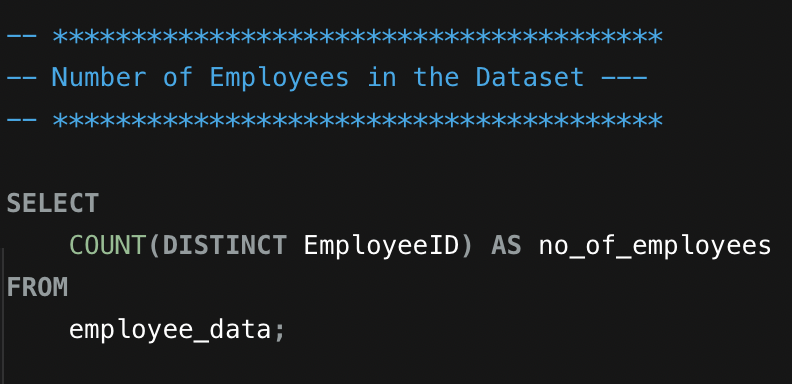
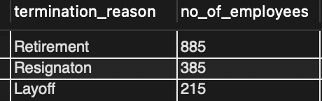
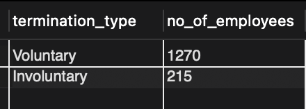

Introduction
The purpose of this project is to perform data analysis on a dataset containing employee information. By utilizing SQL queries, we aim to gain insights into various aspects of the employees' demographics, employment history, and termination details. This analysis can provide valuable information to human resources departments, management teams, or any stakeholders interested in understanding the composition and dynamics of the employee workforce.
Target AudienceHuman resources departments, management teams, and stakeholders interested in analyzing employee data.
Data and Code
- The data used in this project can be found here.
- The SQL queries used to obtain the results can be found here.
- employee id: The ID of the employee. Values are integers. There are no missing values.
- employee record date: The date the record was collected. All values are datetime. There were no missing values.
- birth date: The birth date of the employee. All values were imported as text and converted to datetime. There were no missing values.
- hire date: The date the employee was hired. All values were imported as text and converted to datetime. There were no missing values.
- termination date: The employee's last day of work. All values were imported as text and converted to datetime. There were no missing values. All active employees have a termination date of '1900-01-01'.
- age (years): The age of the employee. All values ware integers. There were no missing values.
- length of service (years): How long the employee has worked for the company. All values are integers. There were no missing values.
- city: The location of the store the employee works/worked at. All values are text. There were no missing values.
- department: The department the employee works/worked in. All values are text. There were no missing values.
- job title: The job title of the employee. All values are text. There were no missing values.
- store number: The number of the store the employee works/worked at. All values are integers. There were no missing values.
- gender: The gender of the employee. All values are text. There were no missing values.
- termination reason: Reason the employee was terminated. All values are text. There were no missing values. The termination reason for all active employees is 'Not Applicable'.
- termination type: The type of termination of the employee. All values are text. There were no missing values. The termination type for all active employees is 'Not Applicable'.
- status year: The year the employee status was recorded. All values are integer. There were no missing values.
- status: Current employment status of the employee. All values are text. There were no missing values.
- business unit: The unit the employee works/worked in. All values are text. There were no missing values.
- How many employees work or have worked for the company?
- What is the distribution of employees across different cities, departments, and job titles?
- What is the overall gender ratio in the workforce?
- What is the average age and length of service for employees?
- What percentage of employees have stayed longer than the average length of service?
- How many employees were terminated in each year? What are the most common termination reasons and types?
- How does employee turnover rate change over the years?
- Are there any relationships between employee attributes such as age, gender, or job title, and the termination reason?
- Are there any company-wide hiring trends over the years?
Data Cleaning
- The following columns were modified to ensure all columns had the appropriate datatype:
- birthdate_key
- orighiredate_key
- terminationdate_key
- Some job titles were inconsistent and were updated to ensure consistency:
- Director
- Executive Assistant
- VP
- Chief Information Officer
Data Analysis
- Number of Employees in the Dataset: There are 6,284 unique employees (active
and
terminated) in the dataset.


- Distribution of Employees Across Cities, Departments, and, Job Titles:
- Distribution of Employees Across Cities: Employees (active and terminated)
are
located
in 40 cities. The city with the most employees is Vancouver (1392) and
the city with
the
least
employees is Blue River (1).


- Distribution of Employees Across Departments: There are 21 departments
listed
in the
dataset. The department with the most employees is Meats (1252) and the
deparment
with the
least
employees is Legal (3). This analysis includes active and terminated
employees.


- Distribution of Employees Across Job Titles: There are 32 job titles listed
in the
dataset. The job title held by the most employees is Meat Cutter (1218) and
the job
titles held by fewest employees are CEO (1), Legal Counsel (1),
Chief Informatin
Officer (1), and Dairy Manager (1). This analysis includes active and
terminated employees.


- Distribution of Employees Across Cities: Employees (active and terminated)
are
located
in 40 cities. The city with the most employees is Vancouver (1392) and
the city with
the
least
employees is Blue River (1).
- Overall Gender Ratio in the Workforce (active and terminated): There are 3006
males
and 3278 females in the workforce.

- Average Age and Length of Service (active and terminated): The average age of employees is 45 years and the average length of service is approximately 12.84 years.
- Percentage of Employees Below and Above Average Length of Service (active and terminated): 54.09% of employees have a length of service above the average (12.84 years) length of service and 45.91% of employees have an average below the average.
- Number of Employees Terminated Each Year: There are a total of 1485
terminated
employees in the dataset. 2014 is the year with the most terminated
employees (253) and 2013 is the year with the least terminated employees (105).

- Most Common Termination Reasons: The termination reasons listed in the dataset are 'Resignation', 'Retirement', and 'Layoff'.
- Most Common Termination Types: The two termination types provided in the dataset are 'Voluntarily' and 'Involuntarily'.


- Employee Turnover Rate by Year: The year with the largest employee turnover rate was 2014 (5.10%). The year with the smallest employee turnover rate was 2013 (2.01%). This matches the numbers gotten from the number of employee terminations by year analaysis: 2014 had the highest number of employee terminations and 2013 had the lowest number of employee terminations.
- Relationships between Age, Gender, Department and Termination Reason
- Age:
- The 20 - 30 age group had the most number of layoffs and the 60+ age group had the least number of layoffs.
- The 20 - 30 age group had the most number of resignations and the 60+ age group had the least number of resignations.
- Only people over 50 years of age have retirement as a termination reason.

- Gender:
- The frequency of layoffs between males and females is similar.
- Females have a higher frequency of resignation and retirement.

- Department
- All three termination reasons are more frequent in the retail departments compared to the corporate departments.


- Age:
- Hiring Trends Over The Years
- The number of active employees in the company increased from 2006 - 2013, but decresed in 2014 and 2015.